En esta clase, crearás una app inspirada en el juego Simon, donde un lienzo muestra una secuencia de cuatro colores (rojo, azul, verde, amarillo), y debes tocarlo en el orden correcto para ganar puntos. La app reproduce sonidos para aciertos y errores, cuenta los intentos, y permite reiniciar.
Desarrollarás una aplicación en App Inventor llamada SpeedTapApp. Un lienzo mostrará una secuencia de cuatro colores (rojo, azul, verde, amarillo), y deberás tocarlo cuando aparezca cada color en el orden correcto. Ganarás puntos por aciertos, escucharás sonidos, y contarás los intentos. También aprenderás a diseñar una interfaz que se vea bien en cualquier celular, evitando problemas como botones superpuestos. Esta app será la base para la Clase 5, donde trabajarás sobre este mismo proyecto para añadir más funcionalidades.
El componente Lienzo permite mostrar colores o dibujos dinámicos. Lo encontrarás en la paleta "Dibujo y Animación" del diseñador. Este lienzo cambiará colores de forma aleatoria entre: Rojo, Azul, Verde y Amarillo
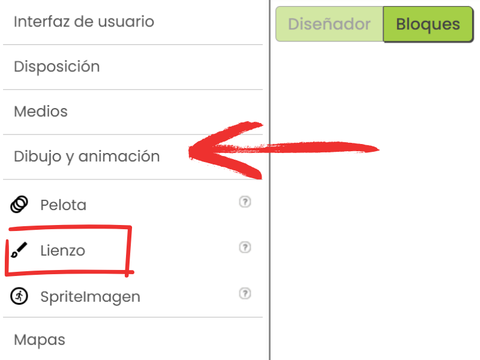
El componente Reloj controla el tiempo y dispara eventos cada cierto intervalo. Está en la paleta "Sensores". Este componente es el que nos ayuda a manejar el tiempo que demora en cambiar los colores, por hoy, cambiará cada 1 segundo.
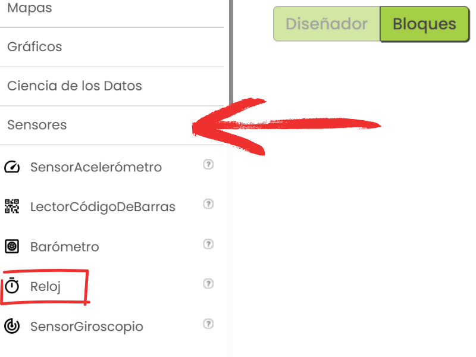
El evento Lienzo.Tocado detecta cuando el usuario toca el lienzo. Está en los bloques del componente Lienzo. Este bloque verifica si el color tocado es el correcto.
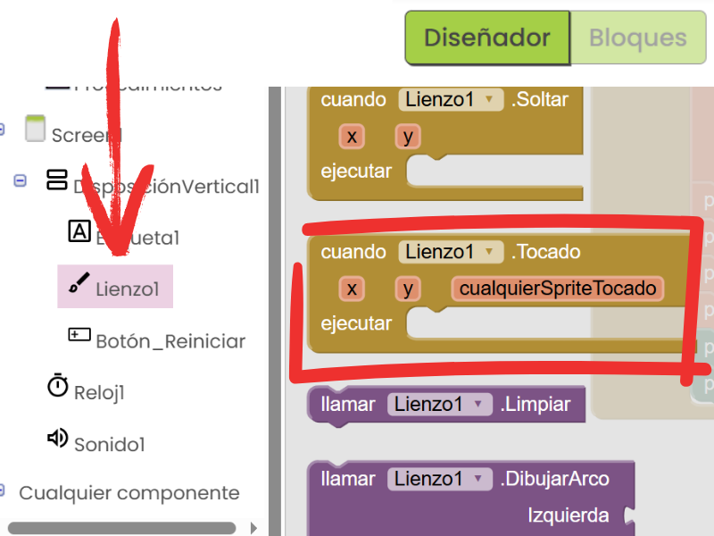
Las listas almacenan datos (como colores) y se usan para generar secuencias. Están en la categoría "Listas". Hoy usaremos una lista fija con los cuatro colores mencionados.
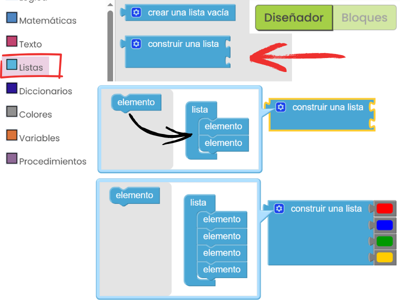
SpeedTapApp.
DisposiciónVertical desde la paleta "Disposición" (DisposiciónVertical1). Configura: DispHorizontal: Centro:3DispVertical: Centro:2Alto: Ajsutar al contenedorAncho: Ajustar al contenedor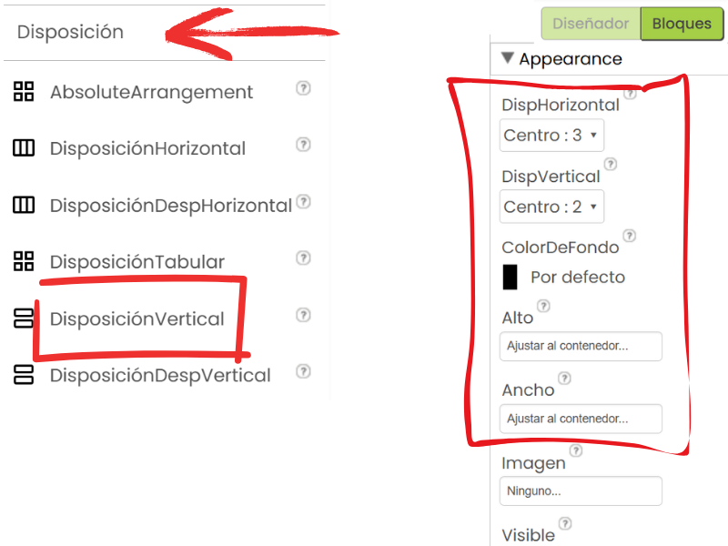
VerticalArrangement1, agrega: Etiqueta (EtiquetaInstruccion) con texto "Toca en el orden: rojo-azul. Puntos: 0". Configura Width: 80%.Lienzo (Lienzo1) desde "Dibujo y Animación". Configura Width: 80%, Height: 50%, BackgroundColor: Gris.Botón (BotónReiniciar) con texto "Reiniciar". Configura Width: 50%.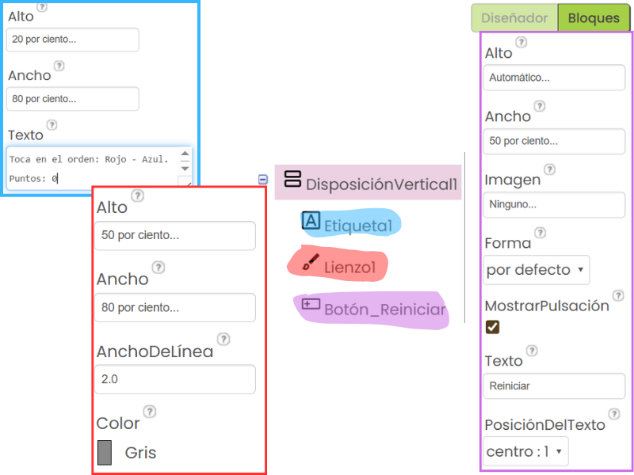
Reloj (Reloj1) desde la paleta "Sensores". Configura IntervaloTiempo: 1000 (1 segundo).
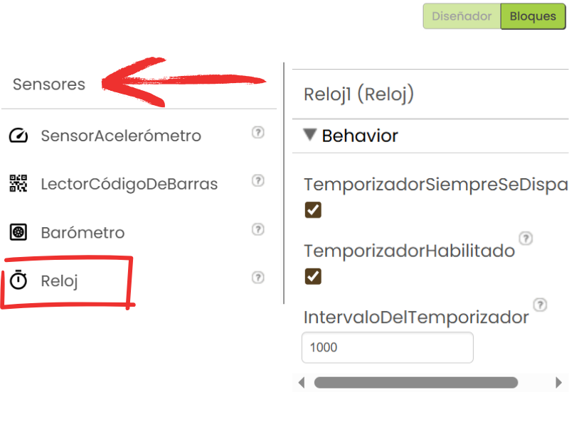
acierto.mp3 (para aciertos) y error.mp3 (para errores). [Opcional: Descarga los sonidos aquí.]
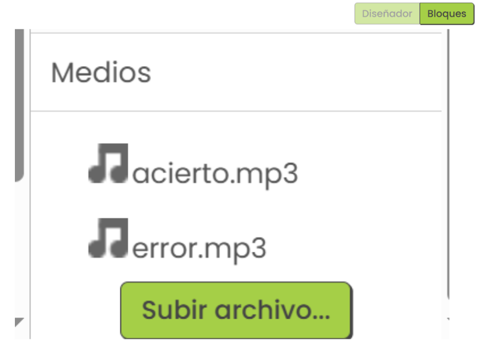
Sonido (Sonido1) desde "Medios". Configura Origen: error.mp3.
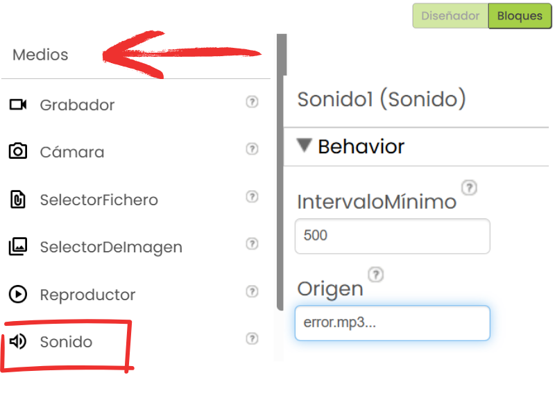
secuenciaColores: Agregar el elemento lista, construir una lista con "Rojo", "Azul", "Verde", "Amarillo" (en la tuerca puedes agregar más elementos a la lista).puntos: Inicializar en 0.Pasos: Inicializar en 1 (para seguir el orden).Intentos: Inicializar en 0.ToquesCorrectos: Inicializar en 0.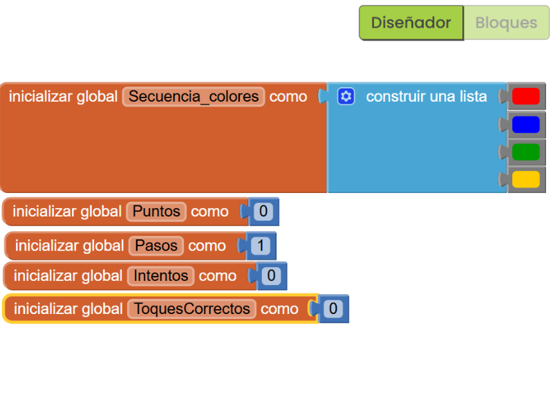
cuando Screen1.Inicializar: secuenciaColores a: construir una lista: "Rojo", "Azul", "Verde", "Amarillo".global puntos a 0.global Pasos a 1.global Intentos a 0.global ToquesCorrectos a 0.Lienzo1.ColorDeFondo como "Gris".Etiqueta1.Texto como "Toca en el orden: ROJO - AZUL. Puntos: 0".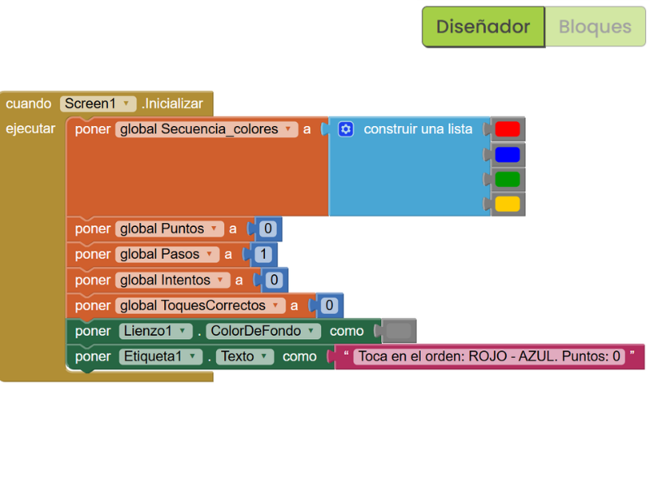
cuando Reloj1.Temporizador ejecutar: Lienzo1.ColorDeFondo como: seleccionar elemento de la lista / Indice : lista tomar global_secuenciaColores índice: (botón matemáticas) entero aleatorio entre __ y __. Poner entre 1 y 4. 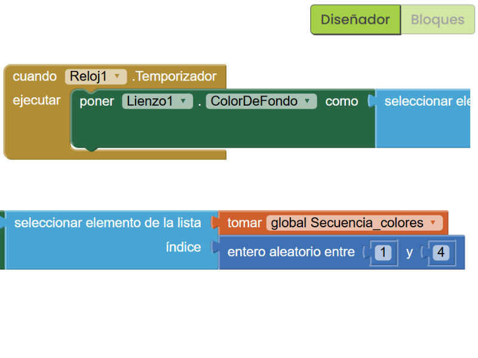
cuando Lienzo1.Tocado ejecutar: Poner global Intentos a tomar global Intentos + 1.Lienzo1.ColorDeFondo = seleccionar elemento de la lista / índice lista: tomar secuenciaColores índice tomar global Pasos: poner global ToquesCorrectos a | tomar global ToquesCorrectos + 1.tomar global ToquesCorrectos = 2 poner global Puntos a | tomar global Puntos + 1 Poner Sonido1.Origen como | acierto.mp3 Sonido1.Reproducir. poner global ToquesCorrectos a 0 poner global pasos a 1 Poner global Pasos a | tomar global Pasos + 1 poner Sonido1.Origen como | error.mp3 llamar Sonido1.Reproducir poner global ToquesCorrectos a 0 poner global Pasos a 1 Etiqueta1.Texto como --unir(3): "Toca en el orden: ROJO - AZUL" | "Puntos:" | tomar global Puntos.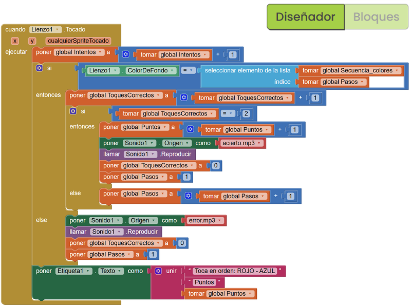
cuando BotónReiniciar.Clic | ejecutar: poner global secuenciaColores a construir una lista con "Rojo", "Azul", "Verde", "Amarillo".poner global Puntos a 0.Poner global Pasos a 1.poner global Intentos a 0.poner global ToquesCorrectos a 0.poner Lienzo1.ColorDeFondo como "Gris".poner Etiqueta1.Texto como "Toca en el orden: ROJO - AZUL. Puntos: 0".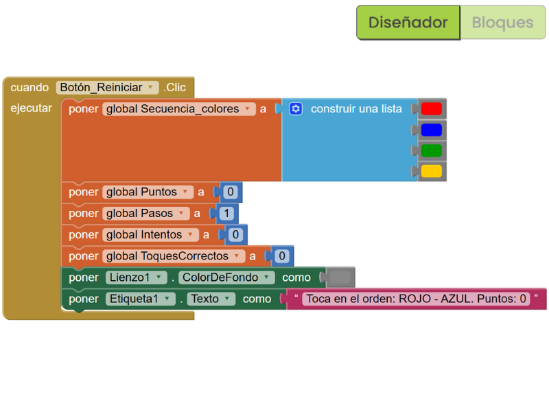
acierto.mp3.error.mp3 sin sumar puntos.¡Felicitaciones! Has completado la Clase 4 y creado SpeedTapApp, una app de reacción rápida inspirada en Simon. Guarda tu proyecto, ya que será la base para la Clase 5, donde lo extenderás con nuevas funcionalidades. Si terminaste, llama a la profesora para que evalúe tu trabajo directamente en el computador (en el emulador o revisando tus bloques). Si la app funciona en tu celular Android, ¡muéstrasela a la profesora para que la evalúe de inmediato! Asegúrate de que el lienzo cambie de color, los puntos se sumen, y los sonidos se reproduzcan correctamente.
Si no alcanzaste a terminar, descarga el archivo .aia desde "Proyectos" > "Exportar proyecto seleccionado (.aia) al computador" en App Inventor y súbelo a Google Classroom. Si tu trabajo ya fue evaluado por la profesora en clase, no necesitas enviar el .aia, pero asegúrate de marcar la tarea como "entregada" en Google Classroom.
Para probar o instalar la app en tu teléfono Android, instala la app MIT AI2 Companion desde Google Play Store, ve a "Conectar" > "AI Companion" en App Inventor, y escanea el código QR. Alternativamente, ve a "Construir" > "App (proveer QR code para .apk)", escanea el código QR, y habilita "Fuentes desconocidas" en tu teléfono para instalarla.